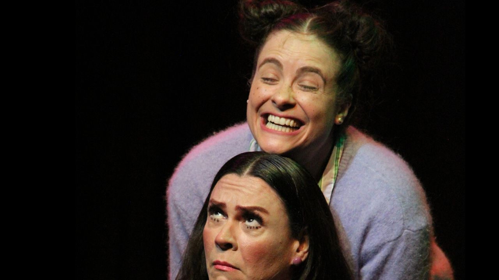

Foto — Luisa Moretti
Teatro
“Antes de Dormir” estreia em maio no Sesc Ipiranga com direção de Joana Dória
Com texto de Liana Ferraz, espetáculo infantojuvenil acompanha o fim da infância por meio de poesia, música e imaginação.…